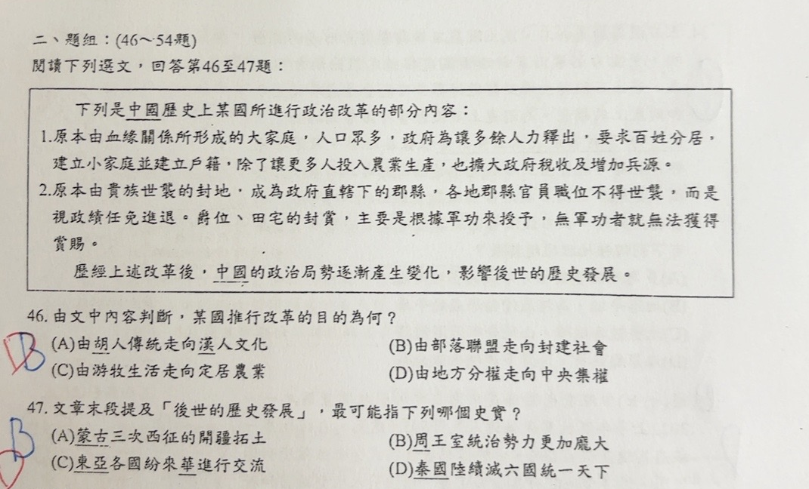
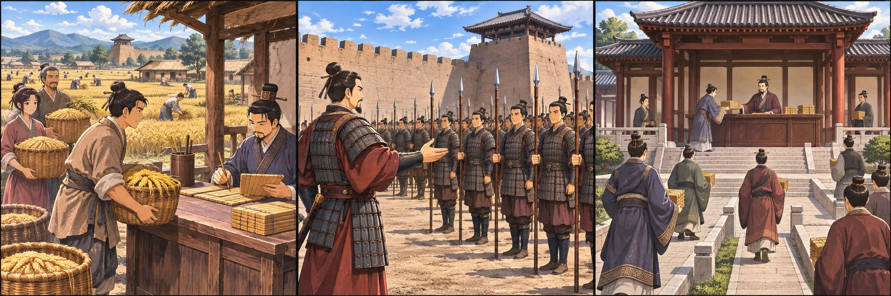

完整原題
作答所需文章／材料
下列是中國歷史上某國所進行政治改革的部分內容： 1.原本由血緣關係所形成的大家庭，人口眾多，政府為讓多餘人力釋出，要求百姓分居，建立小家庭並建立戶籍，除了讓更多人投入農業生產，也擴大政府稅收及增加兵源。 2.原本由貴族世襲的封地，成為政府直轄下的郡縣，各地郡縣官員職位不得世襲，而是視政績任免進退。爵位、田宅的封賞，主要是根據軍功來授予，無軍功者就無法獲得賞賜。 歷經上述改革後，中國的政治局勢逐漸產生變化，影響後世的歷史發展。歷史第46題｜改革目的與中央集權
歷史第47題｜秦國變法後的歷史發展
先想一想，再查看答案、解說與原圖
歷史第46題｜改革目的與中央集權
分享原卷｜第46題 · 首次出題日期 2026-11-08 · 原AI對話 ↗
逐項解析
| 選項與原句 | 判讀 | 句意與判斷理由 |
|---|---|---|
| (A) 由胡人傳統走向漢人文化 | 不選 | 文中沒有改變民族文化的敘述，不是胡人漢化的改革。 |
| (B) 由部落聯盟走向封建社會 | 不選 | 改革反而削弱貴族世襲封地，改由政府直接管理，方向不是建立封建分封。 |
| (C) 由游牧生活走向定居農業 | 不選 | 文中原已存在家庭與農業生產，重點是戶籍、政府徵稅及軍事動員，不是游牧轉定居。 |
| (D) 由地方分權走向中央集權 | 應選 | 分戶編籍、官員不世襲、政績任免及軍功授爵，都加強國家對人口與地方的控制，削弱地方貴族勢力。 |
詳細說明與解題步驟
選D。戶籍讓政府掌握人口、稅收及兵源；封地改為政府直接管轄，地方官按政績任免；軍功授爵則削弱只靠血統世襲的特權。這些措施共同將權力由地方貴族集中到中央政府。
A談民族文化轉變、C談生產生活方式改變，都不是材料的核心；B的封建分封更與削弱世襲地方勢力的方向相反。依國中歷史脈絡，可辨認為秦國商鞅變法、獎勵耕戰與強化中央集權。
材料第一項的作用
↓ 政府管理更直接
① 分戶編籍，政府掌握人口
大家庭分居成小家庭並登錄戶籍，讓政府更容易掌握人口，擴大稅收、取得兵源；重點是國家管理能力提高。
材料第二項的地方管理改變
↓ 權力收向政府
② 封地改直轄，削弱地方世襲
原本貴族世襲的封地，改成政府直接管轄；地方官由政府依政績任免。地方權力不再只是依血統世襲。
找三項政策的共同方向
↓ 連同戶籍、直轄制度一起判斷
③ 軍功授爵，改變世襲特權
爵位與田宅依軍功封賞，配合官員不世襲，都在削弱只靠血統取得權位的勢力。三項措施共同指向中央集權。
④ 分戶、直轄、論功，把權力集中到政府
第46題答案 D：地方分權→中央集權
- 戶籍掌握人口、稅收與兵源。
- 直轄地方，官員依政績任免。
- 不是漢化、游牧轉農業，也不是擴大分封。
核對註記：已實開真正上傳原卷及本題裁圖，核對完整題幹、四選項及必要材料；原題日期取使用者首次提問的台灣日期，並非實際考試日。冊次、章節無證據歸綜合。
原圖（僅本題）

歷史第47題｜秦國變法後的歷史發展
分享原卷｜第47題 · 首次出題日期 2026-11-08 · 原AI對話 ↗
逐項解析
| 選項與原句 | 判讀 | 句意與判斷理由 |
|---|---|---|
| (A) 蒙古三次西征的開疆拓土 | 不選 | 蒙古西征在十三世紀，與戰國秦國變法的直接後續發展不符。 |
| (B) 周王室統治勢力更加龐大 | 不選 | 戰國時周王室已衰弱，變法強化的是秦國，不能推論周王室更強。 |
| (C) 東亞各國紛紛來華進行交流 | 不選 | 材料強調農業、兵源及軍事制度，並未指向東亞交流盛況。 |
| (D) 秦國陸續滅六國統一天下 | 應選 | 秦國變法提高農業、稅收及軍事動員能力，逐漸富國強兵，後來陸續滅六國並統一。 |
詳細說明與解題步驟
選D。前文分戶編籍、地方官任免與軍功授爵等措施，對應戰國秦國商鞅變法。農業與稅收增加、兵源及軍事獎賞制度改善，有助秦國富國強兵；後來秦國陸續滅六國、統一天下，最符合材料所說的後世歷史發展。
不能只看到「中國古代改革」就選任意強盛時代：蒙古西征的時代晚得多，周王室也不是變法後受益而再度強大的主體；材料沒有以對外文化交流作為發展重點。

① 先辨認材料：秦國商鞅變法
分戶編籍、官員依政績任免與軍功授爵，指向戰國秦國的改革。不是只看到古代改革，就任選一個強盛時代。
② 改革增強農業與軍事能力
掌握人口、擴大稅收與兵源，再以軍功激勵，幫助秦國富國強兵。這些措施為後來的發展提供條件，不是說一次改革就立即統一。
③ 後來秦滅六國，最符合發展線索
秦國在後來陸續滅六國、完成統一，符合D。蒙古西征時代晚得多，周王室不是這次改革強化的主體，材料也未強調對外文化交流。
④ 秦國變法富強，後來陸續統一六國
第47題答案 D：秦國陸續滅六國
- 材料屬戰國秦國變法。
- 改革富國強兵，是後來發展的條件。
- 變法在先、秦統一在後，不是商鞅本人完成統一。
核對註記：已實開真正上傳原卷及本題裁圖，核對完整題幹、四選項及必要材料；原題日期取使用者首次提問的台灣日期，並非實際考試日。冊次、章節無證據歸綜合。
原圖（僅本題）